Префектура Киото · Киото · история
Императорский дворец Киото Госё: тронный зал, кабинет и покои, куда не пускали мужчин
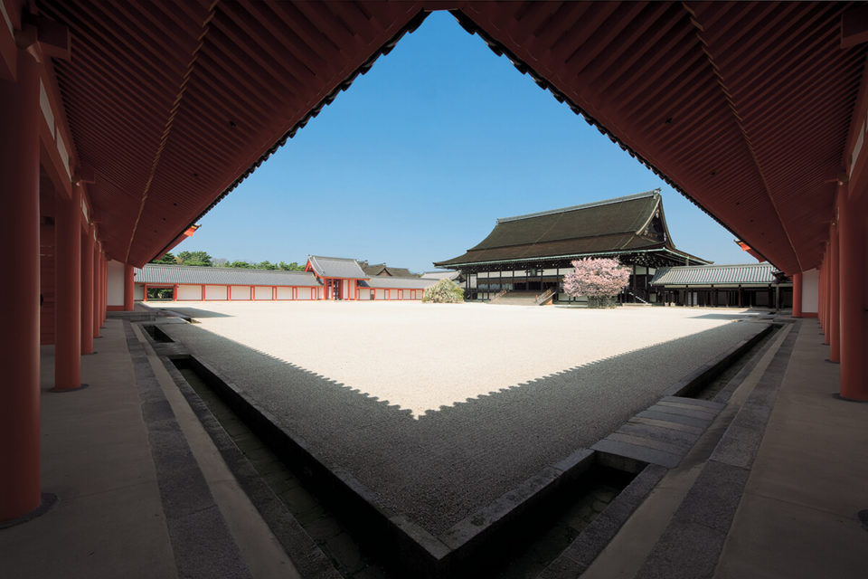
Около пятисот лет императоры Японии жили в Киото, за стенами дворца Госё. Сегодня в него можно зайти без записи и без билета и увидеть тронный зал, кабинет государя и покои, куда не допускали мужчин.
Основы
Город за стеной
Киото Госё был домом японских императоров примерно пять веков, до тех пор, пока в эпоху Мэйдзи двор не переехал в Токио. Поэтому и масштаб здесь особый: за стеной стоят десятки зданий, и у каждого своё назначение. В одних проходили государственные церемонии, в других императоры работали, в третьих жили. Отсюда и обилие того, что стоит увидеть.
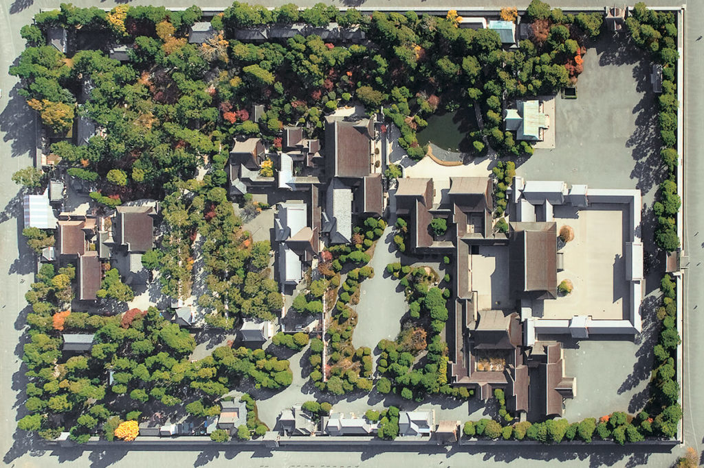
Пройти по дворцу проще всего в том порядке, в каком жил двор: от парадного зала к рабочим комнатам и дальше к личным покоям.
Сисиндэн
Зал, где начиналось царствование
Самое официальное здание дворца, его главный зал, называется Сисиндэн. Здесь в 1868 году император Мэйдзи (1852–1912), при котором Япония вышла из самоизоляции и начала модернизацию, огласил перед придворной знатью и князьями «Клятву пяти пунктов», программу нового правительства. Здесь же прошли церемонии восшествия на престол трёх императоров: Мэйдзи, Тайсё и Сёва.
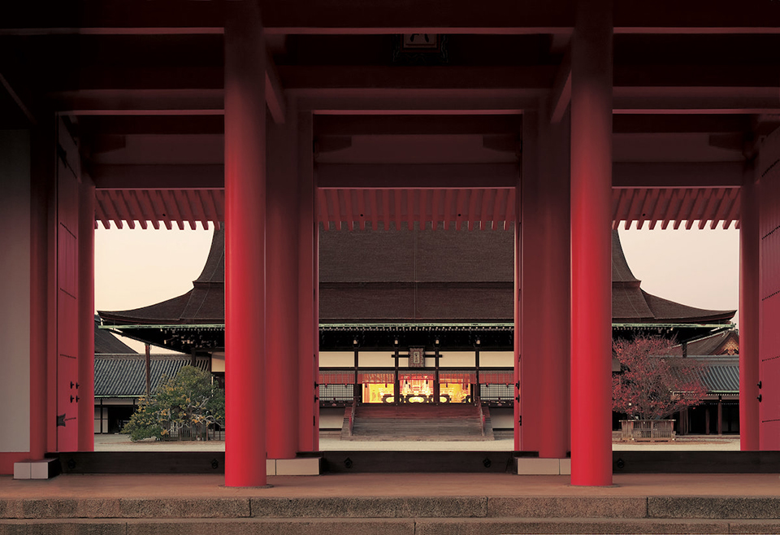
Зал шириной около 33 м с запада на восток и глубиной около 23 м обращён на юг. В древнем Китае считалось, что государь правит, сидя спиной к северу и лицом к югу. Старая столица Хэйан-кё, нынешний Киото, строилась по образцу танской столицы Чанъань и унаследовала эту идею. Нынешний Сисиндэн восстановили в 1855 году, стремясь вернуть облик эпохи Хэйан, и он тоже смотрит на юг.
К фасаду ведёт лестница в 18 ступеней, перед ней лежит двор нантэй, засыпанный белым песком. По сторонам лестницы растут сакура и мандариновое дерево татибана: их сажали так ещё во дворце Хэйан-кё. Пол внутри деревянный, потолка нет, и над головой открыты балки крыши. В центре зала стоят трон императора и место для императрицы, а за ними вставлены раздвижные панели «Кэндзё-но сёдзи» с портретами 32 мудрецов и знаменитых министров Китая.
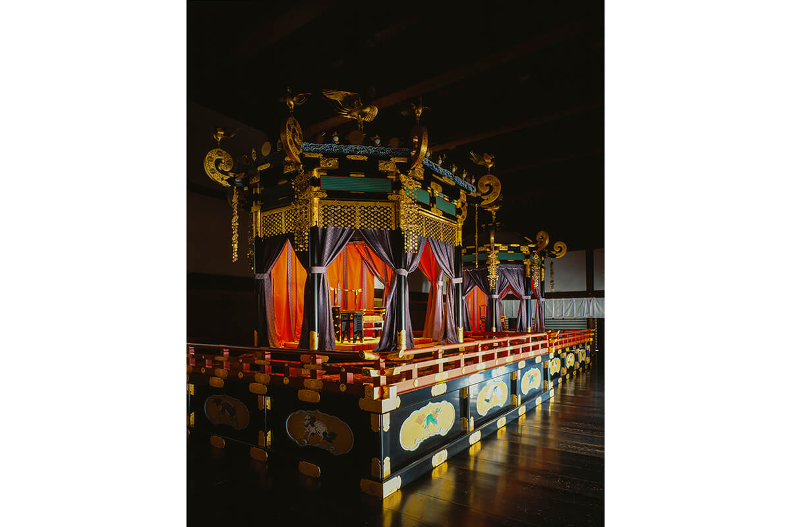
Именно на этот трон восходил император при вступлении на престол, поэтому Сисиндэн и считают символом всего дворца.
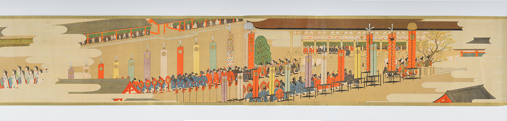
Сэйрёдэн
Кабинет и спальня государя
Северо-западнее Сисиндэна стоит Сэйрёдэн. С середины эпохи Хэйан до конца XVI века император проводил здесь будни. Одна часть здания служила кабинетом: в комнате хи-но омаси он днём принимал придворных и проводил церемонии. Остальное больше похоже на жилой дом.
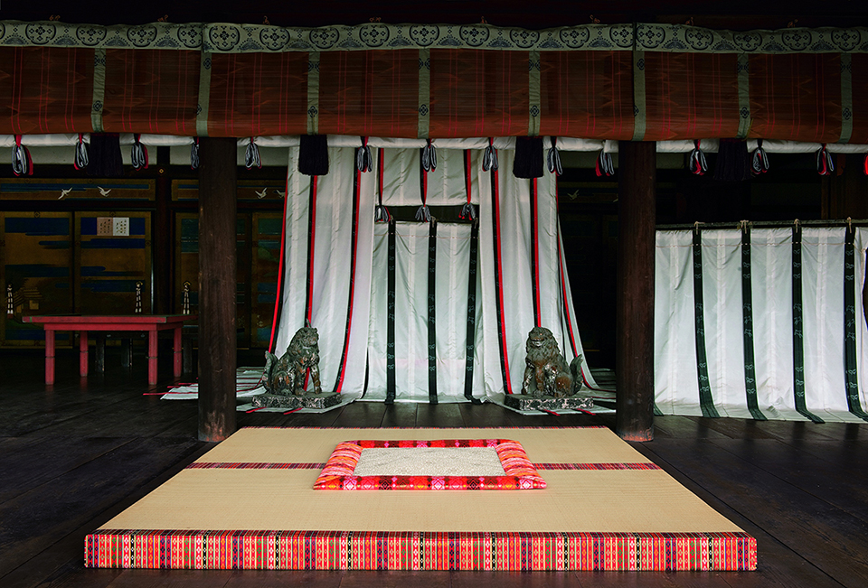
Рядом друг за другом идут комната асагарэй-но ма для утренней трапезы, кухня дайбандокоро, где готовили еду для государя, и комната они-но ма, где дежурили придворные дамы, ухаживавшие за императором. Сразу за кабинетом расположены спальня ёру-но отодо и комната для умывания отёдзу-но ма: всё то, без чего не обходится и современный дом.
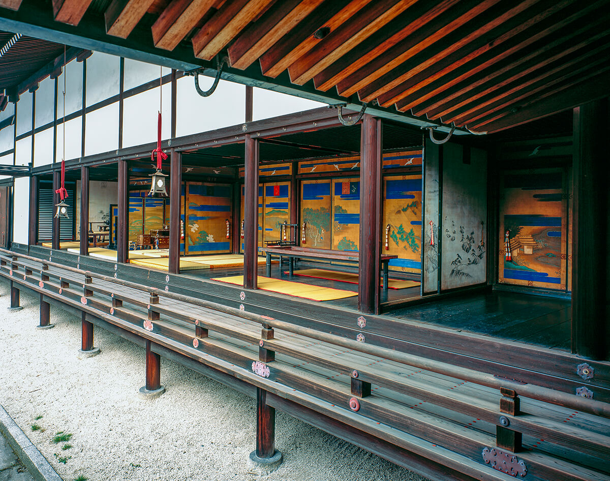
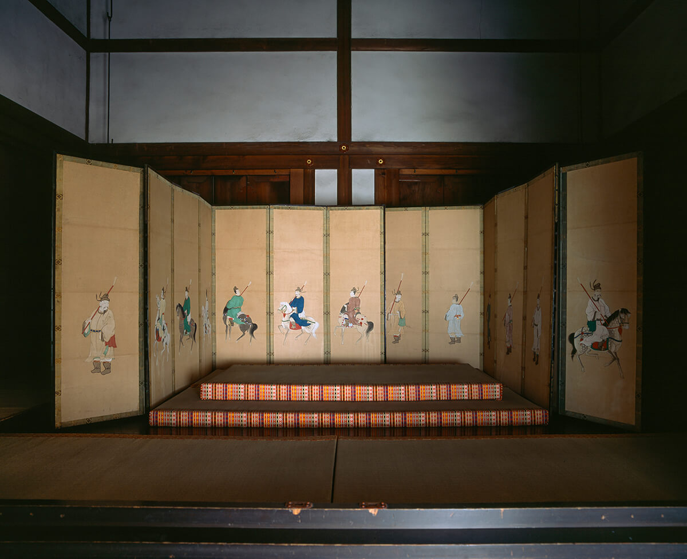
Обычным посетителям показывают только рабочую часть с комнатой хи-но омаси. Присмотритесь к шатру митёдай за сиденьем государя: внутри, за шёлковыми занавесями, император отдыхал в течение дня.
Этот Сэйрёдэн тоже построен в 1855 году, и императоры в нём уже не жили. И всё же ни одно здание дворца не передаёт так живо, как был устроен быт императора в эпоху Хэйан.
Оцунэ-годэн
Покои, где служили только женщины
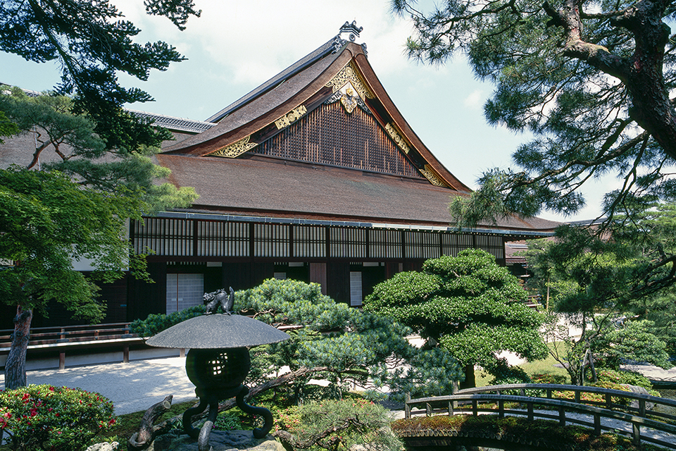
Оцунэ-годэн построили как отдельный дворец для повседневной жизни государя в 1589 году, когда Хидэёси Тоётоми (1537–1598), полководец, объединивший Японию в конце XVI века, взялся перестраивать Сисиндэн. Шестнадцать императоров, от Гоёдзэй до Мэйдзи, проводили здесь личное время. Мужчинам вход был закрыт: кроме мальчиков-пажей и нескольких пожилых мужчин, императору прислуживали только придворные дамы. Использовали покои вплоть до императора Мэйдзи, так что по меркам долгой истории дворца это было совсем недавно.
В Оцунэ-годэн 15 комнат, это самое большое здание дворца. Есть три ступенчатых зала, дзёдан-но ма, тюдан-но ма и гэдан-но ма, для домашних церемоний вроде новогодних поздравлений, спальня гёсин-но ма и комната ни-но ма, где принимали людей и обедали.
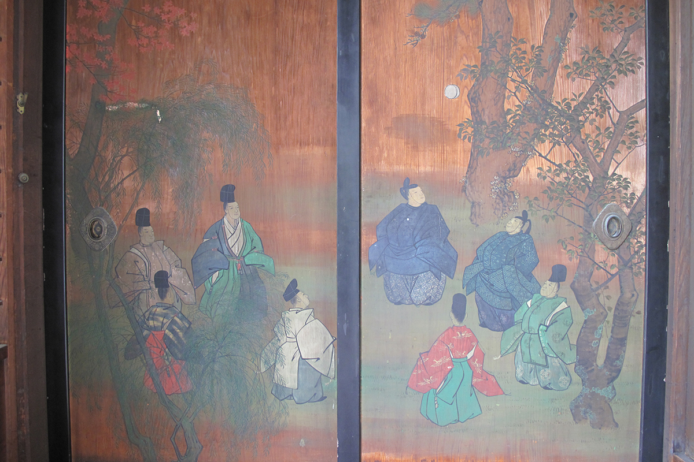
Самый необычный из залов это дзёдан-но ма. Его украшают павлония и бамбук, символы императора, а за раздвижными дверями находится комната, где хранили меч и яшмовые подвески, две из трёх священных регалий, знаков законной власти императора. Прежде такая комната была в Сэйрёдэне, но, когда жизнь двора переместилась в Оцунэ-годэн, её устроили заново здесь: император держал регалии всегда рядом с собой.
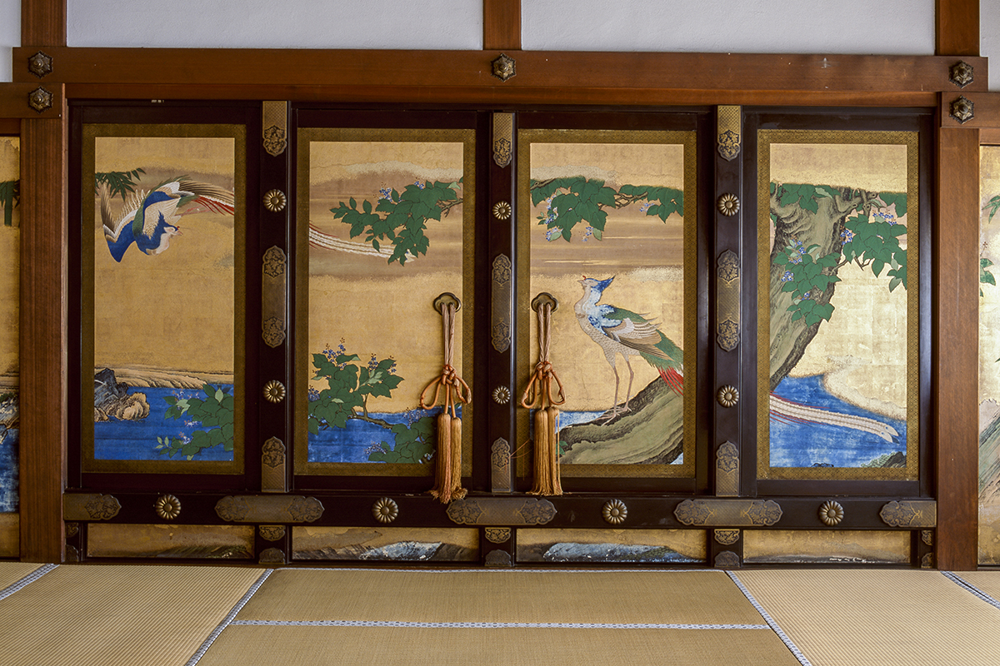
Спальня гёсин-но ма занимает 18 татами. Когда на престол вступил император Мэйдзи, росписи на её дверях поменяли: вместо петуха, бамбука и хризантем там появились тигры. Пол двойной, внутрь для тепла насыпали рисовую шелуху, а сверху положили толстые татами. Сохранились записи о том, что в этой комнате ночевали императоры Мэйдзи, Тайсё и Сёва.
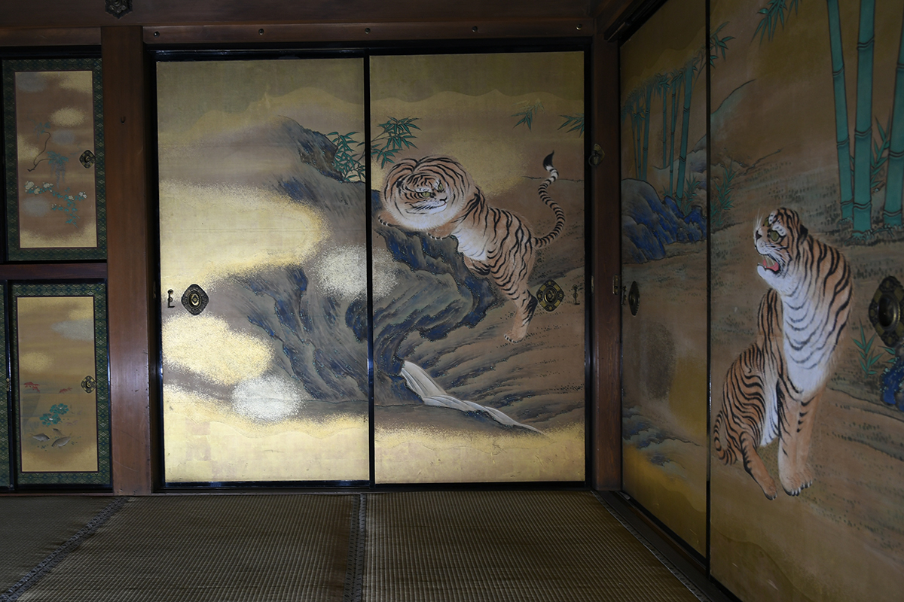
С восточной стороны покоев раскинут сад для прогулок вокруг пруда. Вдоль ручья посажены деревья и кусты, цветущие в разные сезоны, через воду перекинуты зигзагообразный мостик яцухаси, каменный и деревянный мосты. Легко представить, как императоры каждый день любовались этим видом.
Как попасть
Без билета и без записи
Дворец открыт для посетителей круглый год, записываться заранее не нужно, вход бесплатный (так было и в 2019 году). Время входа меняется по сезонам, его лучше посмотреть на сайте. Четыре раза в день проходят бесплатные экскурсии с гидом, без записи: сбор в зале ожидания для посетителей.
Императорский дворец Киото Госё
- Адрес
- префектура Киото, Киото, район Камигё, Киото-гёэн, 3
- Телефон
- +81 75-211-1215 (8:30–17:15)
- Часы работы
- время входа зависит от сезона, смотрите сайт
- Выходные
- понедельник (если праздник, то следующий день), новогодние праздники, бывают дополнительные выходные
- Цены / Вход
- бесплатно, без записи; бесплатные экскурсии с гидом в 9:30, 10:30, 13:30 и 14:30
Фото: Киотское отделение Управления императорского двора, Акира Наката.